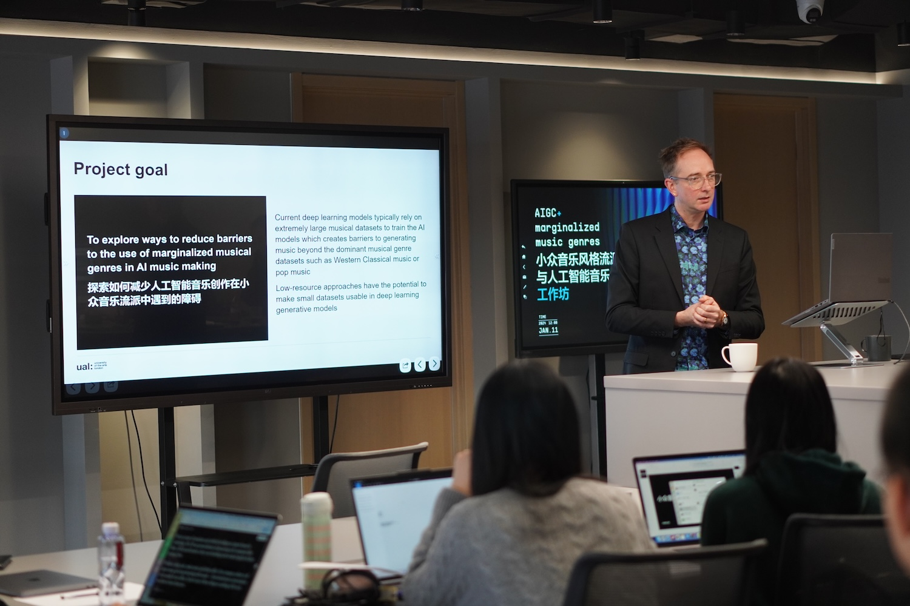
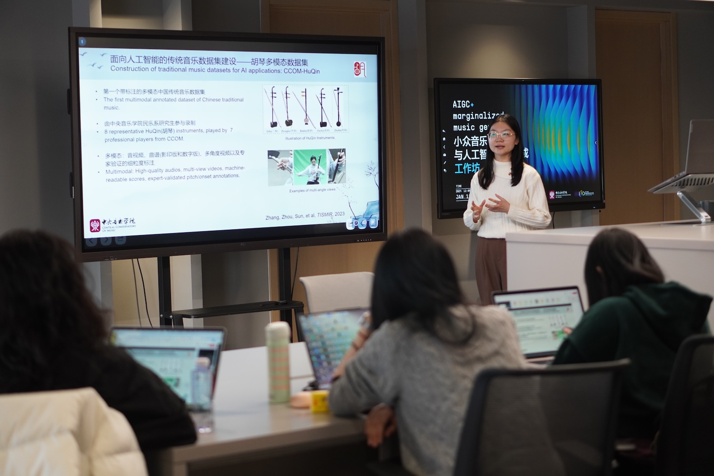
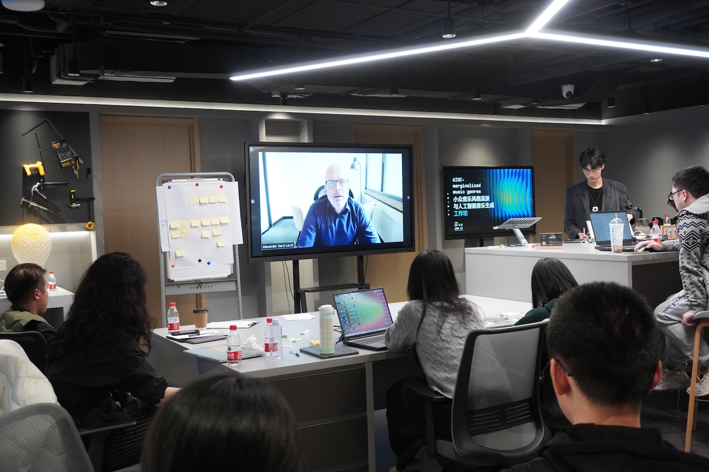
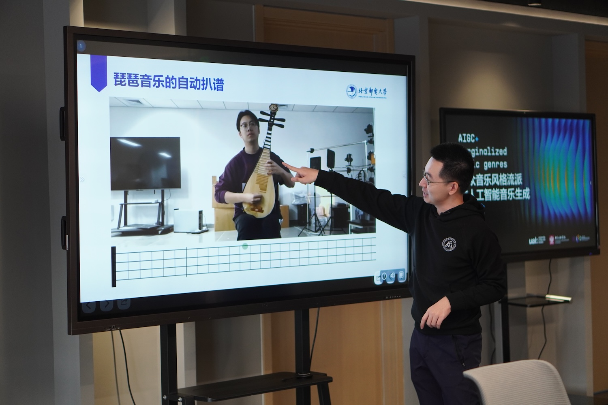
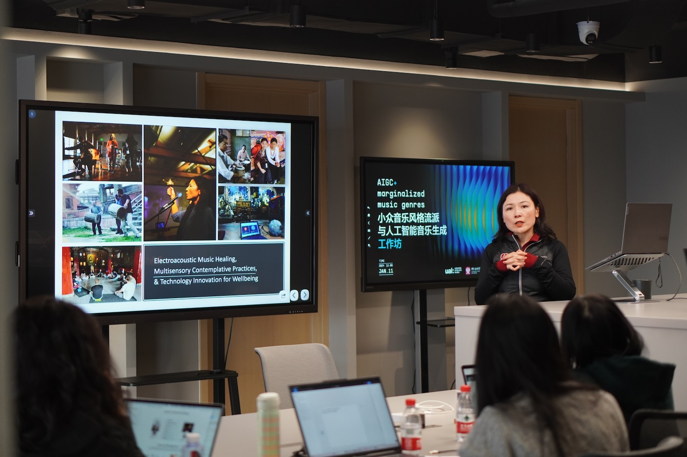
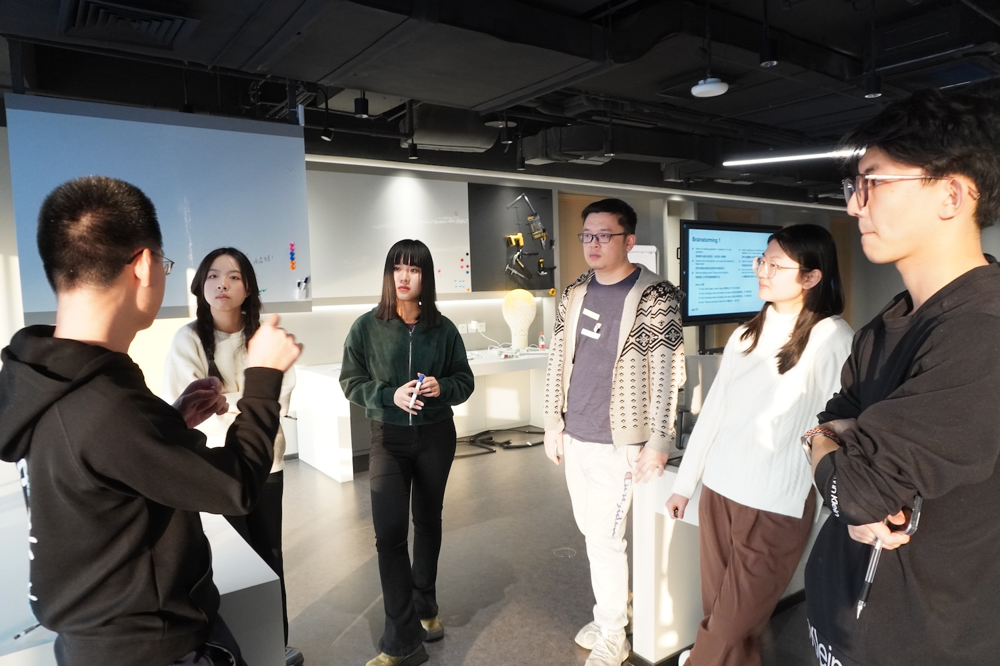
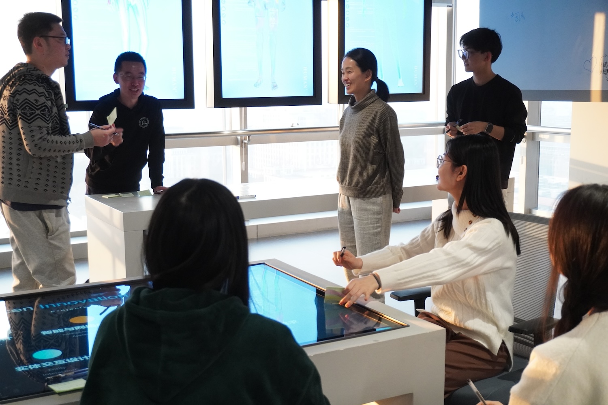

Exploring Reducing Barriers to the Use of Marginalized Music Genres in AI
This 4 month project explored barriers to the use of marginalized musical genres in AI music making in the UK and China. The Creative Industries and Intangible Cultural Heritages of the UK and China provide a rich ecosystem of creative industries AI research along with substantial cultural heritage beyond the dominant forms typically used in current music AI research. Current deep learning approachs to music generation typically rely on extremely large musical datasets to train the AI models which creates barriers to generating music beyond the dominant musical genre datasets such as Western Classical music or pop music. For example, it is not possible to train these models on many minority culture genres such as Qin genre in China nor contemporary subcultures such as glitch or algorithmic music.
Team
Prof. Nick Bryan-Kinns | University of the Arts London, UK
Prof. Zijin Li | Central Conservatory of Music, China

Video Summary
AI Music Composition
We commissioned a new piece of music generated using an AI model (RAVE 2.3) trained on a dataset of traditional Chinese musical instruments from the Chinese Musical Instrument Database (中国乐器数据库). Using 36 hours of audio from the dataset 108 hours of RAVE model training was undertaken with an A100 GPU.
Interviews
We undertook interviews with international experts on AI music generation and analysis to better understand the challenges and opportunities of using small datasets of music with AI.
Interviewees:
Prof. Andrew McPherson | Imperial College, UK
Prof. Mick Grierson | University of the Arts London, UK
Dr. Joe Lyske and Dr. Nadine Kroher | DAACI, UK
Prof. Xavier Serra | Universitat Pompeu Fabra, Spain
Dr. Gus Xia | MBZUAI, UAE
Dr. Rongfeng Li | BUPT, China
Workshop
We hosted a hybrid workshop in Jan 2024 with 37 participants at Tsinghua University Institute of Data and Intelligent Innovation Design, Academy of Arts and Design, Beijing, China. The workshop showcased international case studies of using AI with small and marginalized datasets of music. Participants brainstormed and discussed the challenges and opportunities for using AI with small datasets of music and networked to build connections between the creative industries of China and the UK.
Workshop hosts:
Prof. Nick Bryan-Kinns | University of the Arts London
Prof. Qiong Wu | Tsinghua University
Prof. Zijin Li | Central Conservatory of Music

Funding
Funded by AHRC-Funded Fellowship to Explore UK-China Creative Industries Research and Innovation Hub